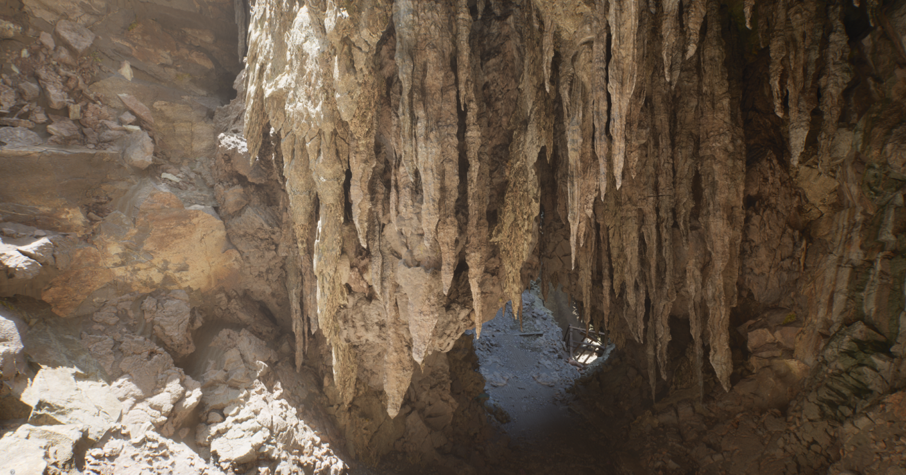

Final report
Final report
Jasper Liu, Zihan Liao, Junming Chen, Jinglun Zhang
"Real-time global illumination has always been a holy grail of computer graphics."
Lumen is a dynamic global illumination and reflections system implemented in Unreal Engine (UE) 5. Lumen Global Illumination solves diffuse indirect lighting. In this final project, we aim to explore and implement the core and essential idea behind Lumen. Ignoring the complex engineering and framework limitations, we want to build a global illumination renderer that traces the ray to collect direct light, but uses a Radiosity-based method for accumulating indirect light as Lumen does. Our goal is to achieve an amazing global illumination quality faster in a real-time rendering fashion.
Lumen is a dynamic global illumination and reflections system implemented in Unreal Engine (UE) 5. Lumen Global Illumination solves diffuse indirect lighting. In this final project, we aim to explore and implement the core and essential idea behind Lumen. Ignoring the complex engineering and framework limitations, we want to build a global illumination renderer that traces the ray to collect direct light, but uses a Radiosity-based method for accumulating indirect light as Lumen does. Our goal is to achieve an amazing global illumination quality faster in a real-time rendering fashion.
In general, the difficulty of real-time global illumination lies in solving the rendering equation:
By discretizing the equation and breaking the continuous surface into surface elements, we are able to reach the following linear equations:
where \( B_i(u) \) represents the radiance of the \( i \)-th surface element at direction \( v \), \( B_{e,i} \) is the emission from the \( i \)-th surface element.
Now the question is how to efficiently solve this linear equation. One way is to use Gaussian elimination, but the time complexity goes up in cubic order with respect to the number of surface elements.
Lumen incorporates two new ideas: surface and radiance cache. They sample and store some radiance \( B_i(v) \) of the \( i \)-th surface element and the corresponding material information at the \( t \)-th time step, and use them to update the \( B \)s at the \( t+1 \)-th time step.
This method relies on one condition to converge quickly and accurately to the true global illumination solution: the radiance of the \( i+1 \)-th surface element at the \( t \)-th time step does not differ significantly from itself at the \( t+1 \)-th time step. And this condition is generally true in scenarios where real-time rendering is needed.
While the previously introduced equation provides the theoretical foundation for real-time global illumination, our implementation experience reveals that the core strength of Unreal Engine 5's Lumen system lies primarily in its engineering design. Several key challenges must be addressed to enable practical performance, among which the first is:
Lumen addresses this challenge by casting a set of rays from each surface element. For the \( i \)-th surface element, rays are cast to identify contributing \( B_j^t \) values, compute the associated form factors \( F_{ij} \), and update \( B_i^{t+1} \). This strategy effectively approximates the full summation by randomly sampling a subset of contributing elements rather than exhaustively iterating over all possible surface pairs. Given infinite parallelism, this approach reduces the complexity to \( O(\text{rays} \times O(\text{ray-surface intersection})) \).
The second engineering challenge is as follows:
To overcome this, Lumen avoids direct ray-triangle intersection and instead employs ray marching accelerated by signed distance fields (SDFs) [wright2022lumen], which are significantly more GPU-friendly [tomczak2012gpu].
We began by implementing a world-space SDF using a 3D texture that encapsulates the entire scene’s bounding box, with a resolution of \( 256 \times 256 \times 256 \). The SDF is computed and updated in real time using the Jump Flooding Algorithm (JFA) [rong2006jump]. The result of this initial implementation is illustrated in Fig. fig:stupid_sdf.
However, this implementation exhibits several limitations. Achieving adequate geometric detail necessitates high-resolution SDFs, yet JFA only provides an approximation, which introduces imprecision at finer resolutions. As shown in Fig. fig:stupid_sdf, some voxels remain incorrectly updated, resulting in noticeable artifacts (e.g., white pixels indicating rays that fail to intersect geometry). Furthermore, the performance is suboptimal; rendering the hit point lengths at this resolution yields only ~25 FPS.
Upon reviewing documentation and visuals from Unreal Engine 5, we identified Fig. fig:ue_sdf, which shows a mesh SDF implementation with a much lower resolution of \(56 \times 49 \times 56\). This observation led us to hypothesize that Lumen maintains a separate SDF for each mesh, computed in the object space and covering only the mesh’s bounding volume. During ray marching, the bounding box of the mesh is first intersected, and marching proceeds in object space to find the hit point on the mesh surface. This insight is consistent with Lumen’s use of the term Mesh Distance Field.
Based on this understanding, we implemented mesh-space SDFs. Each mesh maintains its own distance field within object space. This revision significantly improved both accuracy and performance, achieving approximately 160 FPS. The result is shown in figures above
Having established a method to compute surface-ray intersections via signed distance field (SDF) ray marching, we encounter the third key challenge:
An initial idea was to allocate a texture with the same resolution as the mesh’s SDF to store surface properties. However, this approach quickly proved impractical. The primary reason is that rendering equation assumes a purely diffuse scene, wherein only radiosity must be stored. For more complex materials—such as mirrors—radiance samples over the hemisphere must be retained. For instance, if each surface element casts 64 rays to sample hemispherical radiance, and each sample stores a direction (3 floats), probability (1 float), and value (3 floats), this results in 1792 bytes per surface element. Given Lumen's maximum supported SDF resolution of \(128 \times 128 \times 128\), the total memory requirement would exceed 3.5 GB per object, which is prohibitively large.
Fig. fig:ue_cards, sourced from the official Unreal Engine documentation, reveals Lumen’s approach to mitigating this storage overhead. The key observation is that the axis-aligned bounding box of a mesh typically contains substantial regions of empty space that do not correspond to the actual surface and thus need not be cached.
To avoid caching this non-surface volume, Lumen introduces the concept of Cards. A card is a spatial cuboid that is discretized to store surface data. A given mesh is decomposed into multiple cards, each capturing a portion of its surface. This subdivision reduces the amount of unused space represented in the cache. However, it introduces an additional lookup cost—during ray intersection, one must identify the specific card containing the hit point to access the corresponding surface data. In the limiting case where a mesh uses a single card, the scheme degenerates into a full-object-space cache with resolution equal to that of the SDF. Thus, the number of cards offers a tunable tradeoff between memory efficiency and access performance.
To enable card-based caching, we implemented a mesh decomposition strategy using the K-Means clustering algorithm to partition the surface point cloud into a specified number of clusters (equal to the number of desired cards). For each cluster, we computed an oriented bounding box (OBB) using principal component analysis (PCA). The resulting card structure is visualized in Fig. fig:bunny_cards.
Following card generation, we implemented a surface cache. This cache stores the normal vectors and the material information corresponding to the discretized surface points within each card. It additionally records data from 16 radiance emissions originating from the hemisphere of the surface element. A visualization of the resulting normals is provided in Fig. fig:bunny_normal. The visualization frame rate is now about 80 fps.
We now proceed to the radiance cache update step, following the Lumen-style reuse formulation described in radiosity equation. Given the established data structure for the radiance cache, the update is performed as follows: for each surface element represented in the card-based surface cache, we emit 16 rays uniformly distributed over the hemisphere defined by the surface normal stored in the cache. For each ray, we determine its intersection point with the scene geometry and identify the surface element associated with the intersection.
Assume the radiance cache at the intersected surface element stores radiance values \(l_i\) and corresponding directions \(v_i\). The estimated radiance \(r\) in the outgoing direction \(u\) is computed as:
\( r = \frac{1}{16} \sum_{i=1}^{16} \text{BRDF}(u, v_i) \cdot l_i \cdot (v_i \cdot n) / p(v_i) \)
where \(p(v_i)\) is the probability density of sampling direction \(v_i\). For diffuse surfaces, \( \text{BRDF}(u, v_i) = \frac{\text{reflectance}}{\pi} \) and \( p(v_i) = \frac{1}{2\pi} \). For ideal mirror surfaces, \( \text{BRDF}(u, v_i) = \text{reflectance} \) and \( p(v_i) = 16\delta(\text{reflect}(u, n) - v_i) \), where the Dirac delta \( \delta(x) \) is approximated as 1 when \(x\) is sufficiently small, accounting for discretization in the cache.
The radiance cache update algorithm is outlined in Algorithm alg:update_radiance_cache.
Our initial strategy for rendering with the radiance cache is straightforward: for each camera pixel, we cast 16 rays from the screen space, estimate the radiance value \(r\) using the sample equation, and compute the final pixel color as the average of these 16 samples. In effect, the procedure mirrors the radiance cache update process described in Algorithm alg:update_radiance_cache, with the distinction that the updated surface element is now the camera pixel itself rather than a card-based surface element.
The result of this naive sampling approach is shown in Fig. fig:s16. The rendered image exhibits severe artifacts—most notably, large regions on the wall lack any illumination. This is attributed to the sparse sampling of the radiance cache, which fails to capture meaningful radiance contributions for certain viewing directions. Despite this issue, it is worth noting that Lumen [wright2022lumen] employs a similar cache resolution of only \(4 \times 4\) samples per surface element, consistent with our current configuration. A crucial problem arise here:
An alternative remedy is to apply super-sampling during the radiance cache update phase: we compute multiple radiance values per surface element and average them before storing the result in the cache. As illustrated in Fig. fig:s64, this strategy substantially mitigates aliasing artifacts observed in Fig. fig:s16. Nevertheless, some aliasing remains visible, particularly on the walls, and the increased sampling rate imposes a significant rendering speed penalty, rendering this method unsuitable for real-time applications.
To improve the use of the radiance cache, we revisit the formulation in Wright et al. [wright2022lumen], which models the solution to the rendering equation using a geometric series of light transport:
\( L = E + KE + K^2E + \cdots \approx R \)
where \( E \) denotes direct emission, \( K \) represents a reflection operator, and \( R \) approximates the full radiance through a finite number of bounces cached in the radiance structure. Due to constraints in storage and update speed, the radiance cache captures only a coarse approximation of global illumination.
A more accurate representation exploits the fact that most energy is already captured in the first two terms, \( E + KE \). We can then approximate the remaining energy with a cached contribution:
\( L \approx E + KE + K^2 R \)
This formulation aligns with Lumen’s implementation, which uses the radiance cache primarily to account for indirect lighting contributions arising from distant bounces, thereby correcting the error from early truncation of the light transport path. The algorithm corresponds to this two bounce implementation is shown in Algorithm alg:radiance_estimation.
And finally, we arrive at the results shown in Fig. fig:gallery. The CBbunny rendering has a frame rate of about 20fps. The CBlucy and the CBdragon have frame rate of about 10fps.
As shown in Fig. fig:gallery, the rendered result exhibits noticeable noise. This primarily stems from two factors: (1) insufficient rays per pixel, and (2) lack of filtering during radiance sampling. Increasing the number of rays would reduce noise but significantly raise computational cost. Lumen addresses this by employing screen-space radiance caches and importance sampling, updating only a subset of probes per frame. In contrast, our approach performs importance sampling only for direct lighting and updates the entire screen-space radiance cache at every step. Moreover, Lumen places probes—sampling points that emit rays, gather radiance, and write to the radiance cache—more sparsely and strategically, both in world space and on screen, thereby reducing the number of rays required.
After finishing this project, we’re more impressed than ever by Lumen and UE5. Even after many hours of work, we’ve only explored a small part of what Lumen offers. In fact, UE5 has many other incredible systems, like Nanite for mesh management. These carefully designed approximations and engineering ideas make what once seemed impossible—real-time global illumination—actually work in games.
The rendering equation alone cannot make this possible. It is through thoughtful engineering that such a system becomes real—bringing virtual worlds to life on a computer screen. Only now do we truly understand the saying: mathematicians describe the world, engineers create it.